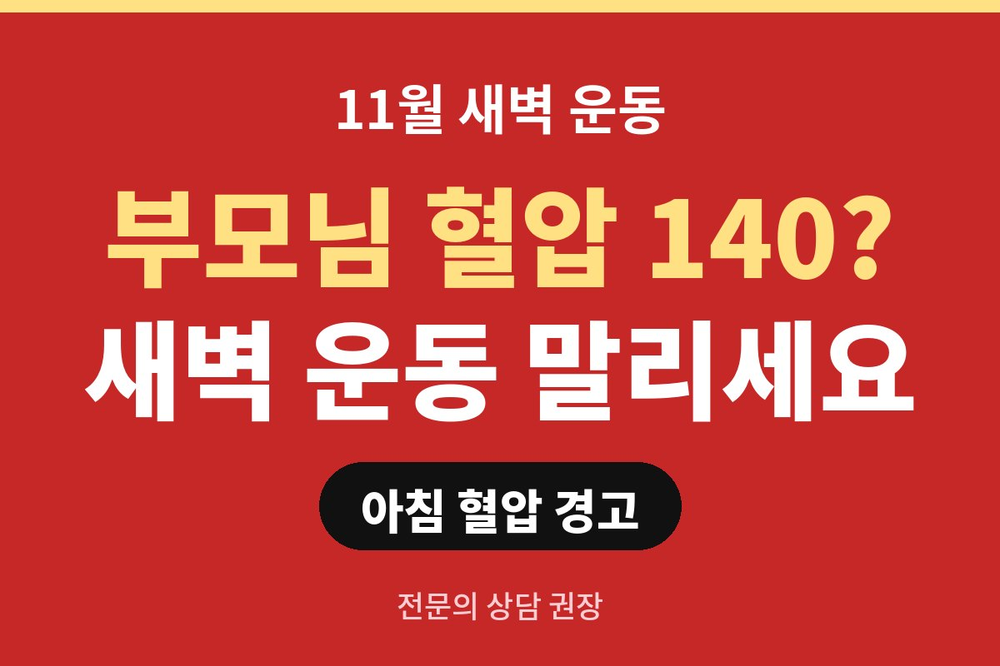
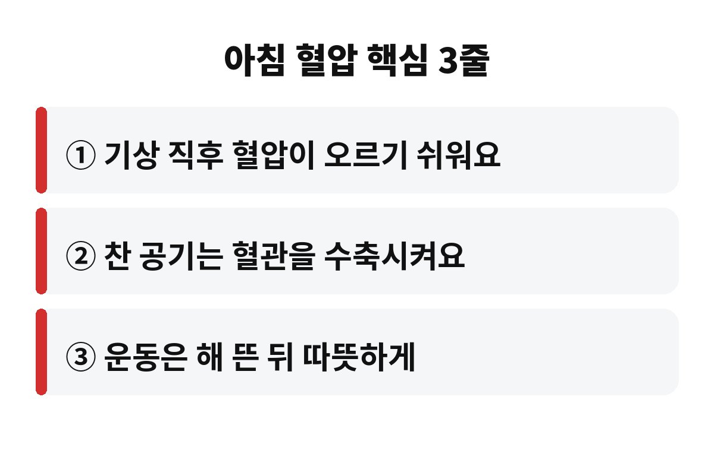
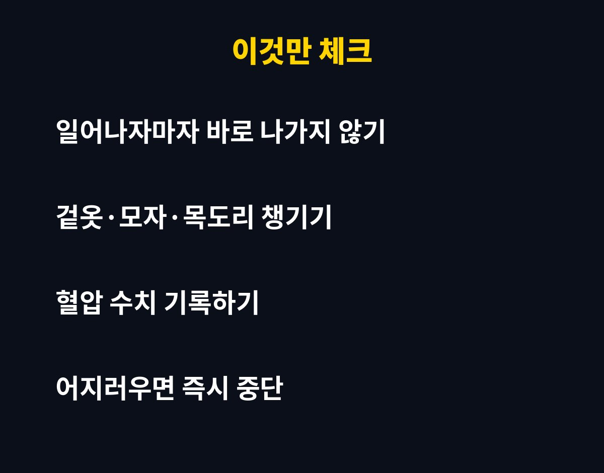

아침 혈압이 140/90 이상으로 자주 나온다면 고혈압 범위로 보기 때문에, 11월 새벽 운동은 한 번 더 따져 봐야 합니다. 부모님이 매일 새벽 공원을 도는 분이라면, 왜 이 시기가 특히 조심스러운지 궁금하지 않으세요?
요즘 아침저녁으로 훅 쌀쌀해졌죠. 건강 챙기겠다고 일찍 나가시는 부모님 마음은 알지만, 아침 혈압은 하루 중에서도 유난히 출렁이는 시간대라서 날씨까지 차가워지면 이야기가 달라집니다. 어렵지 않게 풀어 드릴게요.
우리 몸은 잠에서 깰 때 활동 모드로 바뀌면서 혈압과 맥박을 끌어올립니다. 자는 동안 느슨했던 몸에 시동을 거는 과정이라고 생각하면 쉬워요. 그래서 기상 직후는 하루 중 혈압이 높아지기 쉬운 시간대로 알려져 있습니다.
여기에 찬 공기까지 더해지면 혈관이 움츠러들어요. 혈관이 좁아지면 같은 양의 피를 보내기 위해 심장이 더 힘을 써야 하고, 그만큼 혈압이 더 오르기 쉽죠. 평소 아침 혈압이 높은 분이라면 11월의 새벽 공기가 부담이 될 수 있다는 뜻입니다.
보통 집이나 병원에서 잰 혈압이 120/80 아래면 정상 범위로 이야기하고, 140/90 이상이 반복되면 고혈압으로 봅니다. 그 사이는 관리가 필요한 단계로 보는 경우가 많고요. 한 번 높게 나왔다고 바로 걱정할 필요는 없지만, 여러 날 반복된다면 이야기가 다르죠.
한 가지 더. 병원에서는 정상인데 집에서 아침에만 높게 나오는 분도 있어요. 그래서 진료실 수치만 믿지 말고, 집에서 같은 시간에 재서 기록해 가는 습관이 도움이 됩니다.
운동 자체는 혈압 관리에 도움이 되는 좋은 습관이에요. 문제는 시간대와 준비 과정입니다. 일어나자마자 물 한 잔 안 마시고, 몸도 안 풀고, 얇게 입고 곧장 나가는 패턴이 가장 아쉬워요. 혈압이 오르기 쉬운 시간에 찬 공기와 갑작스러운 운동이 한꺼번에 겹치기 때문입니다.
고혈압이 있거나 아침 혈압이 높은 부모님이라면 이렇게 바꿔 보시라고 권해 보세요.
첫째, 해가 뜨고 기온이 조금 오른 뒤로 운동 시간을 미루기. 둘째, 일어나서 바로 나가지 말고 집 안에서 충분히 몸을 깨우기. 셋째, 겉옷과 모자, 목도리로 목과 머리를 따뜻하게 하기. 넷째, 숨이 차거나 어지러우면 바로 멈추기. 이 네 가지만 지켜도 훨씬 부담이 줄어듭니다.
그리고 의외로 놓치는 게 화장실이에요. 추운 새벽에 따뜻한 이불에서 나와 차가운 화장실에서 힘을 주면 혈압이 순간적으로 확 오를 수 있습니다. 욕실에 작은 히터를 두거나 문을 미리 열어 공기를 덜 차갑게 만들어 두는 것만으로도 도움이 돼요. 운동만큼이나 집 안의 온도 차이를 줄이는 것이 중요하답니다.

이게 제일 중요해요. 날씨가 추워졌다고 해서 약을 마음대로 늘리거나 줄이거나 끊으시면 안 됩니다. 혈압이 계절에 따라 달라질 수 있다는 건 널리 알려져 있지만, 약을 어떻게 조절할지는 반드시 담당 의사와 상의해야 해요.
대신 우리가 할 수 있는 건 기록입니다. 아침에 일어나 화장실을 다녀온 뒤 앉아서 잠시 쉬고 혈압을 재고, 수치와 날짜를 메모해 두세요. 다음 진료 때 이 메모를 보여 드리면 의사가 판단하기가 훨씬 쉬워집니다.

거창한 건 없어요. 오늘 부모님께 전화 한 통 드려서 이렇게 말씀해 보세요. "요즘 아침 공기 차니까 해 뜬 다음에 나가세요, 그리고 두껍게 입고요." 이 한마디가 생각보다 큰 차이를 만들 수 있습니다. 가능하다면 혈압계도 하나 챙겨 드리고, 아침 혈압을 같은 시간에 재도록 부탁드려 보세요.
부모님은 새벽 운동을 몇 시에 나가시나요? 댓글로 알려 주시면 함께 이야기 나눠 볼게요. 도움이 되셨다면 구독 눌러 두시고, 다음 건강 이야기도 놓치지 마세요.
※ 이 글은 일반적인 건강 정보이며 진단·치료를 대신하지 않습니다. 혈압약 복용과 운동은 반드시 전문의와 상담하세요.